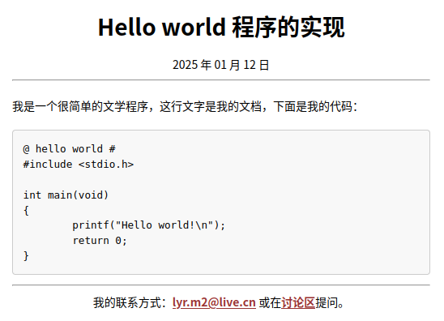
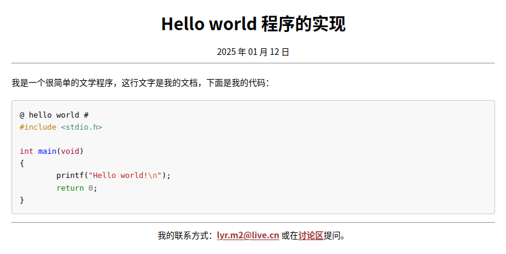
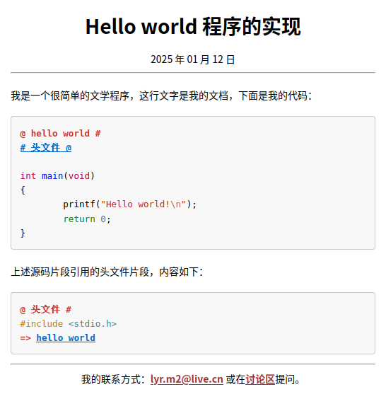
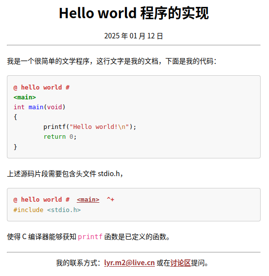
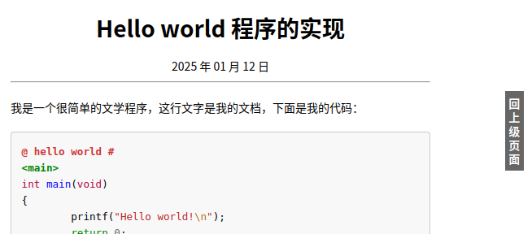

2025 年 01 月 12 日
现在，我有了新的 orez，还有之前我写过的用于制作静态网站的 Bash 脚本 lmd，这两个工具组合起来，会产生怎样的化学反应呢？我也不清楚，可以试试看，但我知道，在 Linux 环境里，反应的结果肯定是一个能够用于发布文学程序文档的静态网站。
假设用于发布文学程序文档的静态网站根目录为 foo，可使用以下命令创建：
$ lmd init "面向文学编程" foo进入目录 foo，并查看上述命令的成果：
$ cd foo
$ lmd tree
foo
├── appearance
│ ├── lmd.css
│ └── pandoc
│ └── data
│ └── templates
│ ├── homepage.template
│ └── post.template
├── figures
├── index.md
├── lmd.conf
├── output
└── source在进行后续操作前，闲将 lmd.conf 的内容根据自己的情况修改一下。该文件实际上是一个 Bash 脚本，默认内容是一组变量的定义：
MARKDOWN_EXT='.md' # markdown 文件扩展名
BROWSER='firefox'
EDITOR='emacs'
LANGUAGE="zh-Hans"
DATE="$(date +'%Y 年 %m 月 %d 日')"
EMAIL='lyr.m2@live.cn'
ISSUES='https://github.com/liyanrui/liyanrui.github.io/issues'
FOOTER="我的联系方式：<$EMAIL> 或在[讨论区]($ISSUES)提问。"你应该根据你的需求修改上述变量的值。注意，Bash 变量的定义中的等号，其两侧不能有空格。
假设当前的工作目录是 foo，现在你接到了一个项目，名字叫
Hello world，该项目要在 foo/source/hello-world
目录中进行构建，可使用以下命令创建该项目：
$ cd source
$ lmd new category "Hello world" hello-world此时若使用 lmd tree 再次查看 foo
的结构，它应该是下面这样：
foo
├── appearance
│ ├── lmd.css
│ └── pandoc
│ └── data
│ └── templates
│ ├── homepage.template
│ └── post.template
├── figures
│ └── hello-world # 项目的所有插图可以放在这个目录
├── index.md
├── lmd.conf
├── output
│ └── hello-world # 项目的文档的排版结果在这个目录
└── source
└── hello-world
└── index.md假设当前工作目录是 foo/source/hello-world，以下命令可在该目录中创建文学程序 hello-world.md：
$ lmd new post "Hello world 程序的实现" main.md上述命令会根据 lmd.conf 中 EDITOR
的值，自动用相应的文本编辑器打开
main.md，其初始内容只有文档首部，形如
---
title: Hello world 程序的实现
lang: zh-Hans
date: 2025 年 01 月 12 日
abstract:
category:
footer: 我的联系方式：<lyr.m2@live.cn> 或在[讨论区](https://github.com/liyanrui/liyanrui.github.io/issues)提问。
...文学程序应该在文档首部下方，即 ...
之后撰写。现在，在当前目录下，不妨再观察一次 foo 目录的结构：
$ lmd tree
foo
├── appearance
│ ├── lmd.css
│ └── pandoc
│ └── data
│ └── templates
│ ├── homepage.template
│ └── post.template
├── figures
│ └── hello-world
│ └── main
├── index.md
├── lmd.conf
├── output
│ └── hello-world
└── source
└── hello-world
├── index.md
└── main.md现在，将以下内容
我是一个很简单的文学程序，这行文字是我的文档，下面是我的代码：
@ hello world # [C]
#include <stdio.h>
int main(void)
{
printf("Hello world!\n");
return 0;
}
@添加到 main.md 文件首部之后，你便有了可能是你的第一个文学程序。
现在，使用以下命令处理 main.md：
$ mv main.md main.orz
$ orez -w main.orz | orez-md > main.md现在，main.md 的内容变为
---
title: Hello world 程序的实现
lang: zh-Hans
date: 2025 年 01 月 12 日
abstract:
category:
footer: 我的联系方式：<lyr.m2@live.cn> 或在[讨论区](https://github.com/liyanrui/liyanrui.github.io/issues)提问。
...
我是一个很简单的文学程序，这行文字是我的文档，下面是我的代码：
<pre id="helloworld" class="orez-snippet-with-name">
<span class="orez-snippet-name">@ hello world #</span>
<span class="cp">#include</span><span class="w"> </span><span class="cpf"><stdio.h></span>
<span class="kt">int</span><span class="w"> </span><span class="nf">main</span><span class="p">(</span><span class="kt">void</span><span class="p">)</span>
<span class="p">{</span>
<span class="w"> </span><span class="n">printf</span><span class="p">(</span><span class="s">"Hello world!</span><span class="se">\n</span><span class="s">"</span><span class="p">);</span>
<span class="w"> </span><span class="k">return</span><span class="w"> </span><span class="mi">0</span><span class="p">;</span>
<span class="p">}</span>
</pre>简而言之，即之前 main.md 中的结构
@ ... #
... ... ...
@转换成了嵌入在 Markdown 文本中的一段 HTML 文本。
以下命令可将 main.md 转化为 HTML 文件 main.html：
$ lmd convert main.md生成的 main.html 位于 foo/output/hello-world 目录，它在
Web 浏览器的样子大致如下图所示：

并不好看，因为缺乏色彩。
也可以使用以下命令实现 main.md 向 main.html 的转化：
$ lmd view main.md上述命令除了生成 main.htmL，还会根据 lmd.conf 中 BROWSER
定义的浏览器打开 main.html。
在 foo/appearance/lmd.css 中添加以下代码
/* 渲染文学编程的代码片段 */
pre {line-height: 1.6em; max-height: 40em;}
.orez-snippet-name, .orez-symbol {font-weight:bold; color: #cc3333;}
.orez-label {font-weight:bold; color:#008000;}
.orez-snippet-with-name .hll { background-color: #ffffcc }
.orez-snippet-with-name { background: #f8f8f8; }
.orez-snippet-with-name .c { color: #408080;} /* Comment */
.orez-snippet-with-name .err { border: 1px solid #FF0000 } /* Error */
.orez-snippet-with-name .k { color: #008000;} /* Keyword */
.orez-snippet-with-name .o { color: #666666;} /* Operator */
.orez-snippet-with-name .ch { color: #408080;} /* Comment.Hashbang */
.orez-snippet-with-name .cm { color: #408080;} /* Comment.Multiline */
.orez-snippet-with-name .cp { color: #BC7A00;} /* Comment.Preproc */
.orez-snippet-with-name .cpf { color: #408080;} /* Comment.PreprocFile */
.orez-snippet-with-name .c1 { color: #408080;} /* Comment.Single */
.orez-snippet-with-name .cs { color: #408080;} /* Comment.Special */
.orez-snippet-with-name .gd { color: #A00000;} /* Generic.Deleted */
.orez-snippet-with-name .ge {} /* Generic.Emph */
.orez-snippet-with-name .gr { color: #FF0000;} /* Generic.Error */
.orez-snippet-with-name .gh { color: #000080;} /* Generic.Heading */
.orez-snippet-with-name .gi { color: #00A000;} /* Generic.Inserted */
.orez-snippet-with-name .go { color: #888888;} /* Generic.Output */
.orez-snippet-with-name .gp { color: #000080;} /* Generic.Prompt */
.orez-snippet-with-name .gs {} /* Generic.Strong */
.orez-snippet-with-name .gu { color: #800080;} /* Generic.Subheading */
.orez-snippet-with-name .gt { color: #0044DD;} /* Generic.Traceback */
.orez-snippet-with-name .kc { color: #008000;} /* Keyword.Constant */
.orez-snippet-with-name .kd { color: #008000;} /* Keyword.Declaration */
.orez-snippet-with-name .kn { color: #008000;} /* Keyword.Namespace */
.orez-snippet-with-name .kp { color: #008000;} /* Keyword.Pseudo */
.orez-snippet-with-name .kr { color: #008000;} /* Keyword.Reserved */
.orez-snippet-with-name .kt { color: #B00040;} /* Keyword.Type */
.orez-snippet-with-name .m { color: #666666;} /* Literal.Number */
.orez-snippet-with-name .s { color: #BA2121;} /* Literal.String */
.orez-snippet-with-name .na { color: #7D9029;} /* Name.Attribute */
.orez-snippet-with-name .nb { color: #008000;} /* Name.Builtin */
.orez-snippet-with-name .nc { color: #0000FF;} /* Name.Class */
.orez-snippet-with-name .no { color: #880000;} /* Name.Constant */
.orez-snippet-with-name .nd { color: #AA22FF;} /* Name.Decorator */
.orez-snippet-with-name .ni { color: #999999;} /* Name.Entity */
.orez-snippet-with-name .ne { color: #D2413A;} /* Name.Exception */
.orez-snippet-with-name .nf { color: #0000FF;} /* Name.Function */
.orez-snippet-with-name .nl { color: #A0A000;} /* Name.Label */
.orez-snippet-with-name .nn { color: #0000FF;} /* Name.Namespace */
.orez-snippet-with-name .nt { color: #008000;} /* Name.Tag */
.orez-snippet-with-name .nv { color: #19177C;} /* Name.Variable */
.orez-snippet-with-name .ow { color: #AA22FF;} /* Operator.Word */
.orez-snippet-with-name .w { color: #bbbbbb;} /* Text.Whitespace */
.orez-snippet-with-name .mb { color: #666666;} /* Literal.Number.Bin */
.orez-snippet-with-name .mf { color: #666666;} /* Literal.Number.Float */
.orez-snippet-with-name .mh { color: #666666;} /* Literal.Number.Hex */
.orez-snippet-with-name .mi { color: #666666;} /* Literal.Number.Integer */
.orez-snippet-with-name .mo { color: #666666;} /* Literal.Number.Oct */
.orez-snippet-with-name .sb { color: #BA2121;} /* Literal.String.Backtick */
.orez-snippet-with-name .sc { color: #BA2121;} /* Literal.String.Char */
.orez-snippet-with-name .sd { color: #BA2121;} /* Literal.String.Doc */
.orez-snippet-with-name .s2 { color: #BA2121;} /* Literal.String.Double */
.orez-snippet-with-name .se { color: #BB6622;} /* Literal.String.Escape */
.orez-snippet-with-name .sh { color: #BA2121;} /* Literal.String.Heredoc */
.orez-snippet-with-name .si { color: #BB6688;} /* Literal.String.Interpol */
.orez-snippet-with-name .sx { color: #008000;} /* Literal.String.Other */
.orez-snippet-with-name .sr { color: #BB6688;} /* Literal.String.Regex */
.orez-snippet-with-name .s1 { color: #BA2121;} /* Literal.String.Single */
.orez-snippet-with-name .ss { color: #19177C;} /* Literal.String.Symbol */
.orez-snippet-with-name .bp { color: #008000;} /* Name.Builtin.Pseudo */
.orez-snippet-with-name .vc { color: #19177C;} /* Name.Variable.Class */
.orez-snippet-with-name .vg { color: #19177C;} /* Name.Variable.Global */
.orez-snippet-with-name .vi { color: #19177C;} /* Name.Variable.Instance */
.orez-snippet-with-name .il { color: #666666;} /* Literal.Number.Integer.Long */有了上述样式表的加持，Web 浏览器对 main.html 新的渲染结果如下图所示：

现在，对 main.orz 的内容稍加变动，结果如下（省略了文件首部）：
我是一个很简单的文学程序，这行文字是我的文档，下面是我的代码：
@ hello world # [C]
# 头文件 @
int main(void)
{
printf("Hello world!\n");
return 0;
}
@
上述源码片段引用的头文件片段，内容如下：
# 头文件 @
#include <stdio.h>
@使用以下命令再次将 main.orz 转换为 HTML 文件：
$ orez -w main.orz | orez-md > main.md
$ lmd view main.md结果如下图所示：

一个源码片段中对另一个源码片段的引用，最终呈现为一个链接，通过它可从前者跳至后者，而后者的尾部会有一个回到前者的链接。
继续保留 main.orz 文件的首部不变，将剩余部分修改为
我是一个很简单的文学程序，这行文字是我的文档，下面是我的代码：
@ hello world # [C]
<main>
int main(void)
{
printf("Hello world!\n");
return 0;
}
@
上述源码片段需要包含头文件 stdio.h，
@ hello world # <main> ^+
#include <stdio.h>
@
使得 C 编译器能够获知 `printf` 函数是已定义的函数。main.orz 再经过 orez 和 orez-md 管线的处理，生成的 main.md 再经过 lmd 命令转化为 main.html，结果如下图所示：

第 1 个 hello world 片段首部存在标签 <main>。第 2
个 hello world 片段引用了这个标签，在 main.html
中引用的标签呈现为链接，通过它克跳至含有该标签的源码片段。引用的标签后面可存在
+ 和 ^+ 运算符，分别用于告知
orez，将该片段的内容追加到含有这个标签的源码片段的尾部和首部。
现在，先查看一下 foo 目录的解构：
$ lmd tree
foo
├── appearance
│ ├── lmd.css
│ └── pandoc
│ └── data
│ └── templates
│ ├── homepage.template
│ └── post.template
├── figures
│ └── hello-world
│ └── main
├── index.md
├── lmd.conf
├── output
│ └── hello-world
│ └── main.html
└── source
└── hello-world
├── index.md
├── main.md
└── main.orz如何将 main.html 访问路径写到网站首页呢？即如何在 foo/index.html 插入一个可以跳转至 foo/output/hello-world/main.html 的链接？
假设当前工作目录是 foo/source/hello-world，使用以下命令可将 main.html 的路径写入到与它同目录的 index.html：
$ lmd appear main.md index.md再查看 foo 目录的结构：
$ lmd tree
foo
├── appearance
│ ├── lmd.css
│ └── pandoc
│ └── data
│ └── templates
│ ├── homepage.template
│ └── post.template
├── figures
│ └── hello-world
│ └── main
├── index.md
├── lmd.conf
├── output
│ └── hello-world
│ ├── index.html # 新增文件
│ └── main.html
└── source
└── hello-world
├── index.md
├── main.md
└── main.orz可以看到，在 foo/output/hello-world 目录出现了 index.html，可将其视为
Hello world 项目的首页。现在，再次使用 lmd appear 命令将
foo/output/hello-world/index.html 添加到 foo/index.html：
$ lmd appear index.md $(lmd root)/index.md形如 $(lmd root) 的命令，在 Bash 中称为子 Shell
命令，即在当前的 Shell 中开启一个新的 Shell
并执行某些命令，并将所得结果回传于当前的 Shell。lmd root
命令可在当前工作目录中获得 foo 目录的相对路径，然后以
$(lmd root) 这种子 Shell 命令形式将该结果递于当前
Shell，使得 lmd 脚本根据 foo 目录的相对路径，找到
foo/index.md，将当前目录中 index.md 对应的
foo/output/hello-world/index.html 路径写入 foo/index.html。
现在可再次查看 foo 目录的结构：
$ lmd tree
foo
├── appearance
│ ├── lmd.css
│ └── pandoc
│ └── data
│ └── templates
│ ├── homepage.template
│ └── post.template
├── figures
│ └── hello-world
│ └── main
├── index.html # 新增文件
├── index.md
├── lmd.conf
├── output
│ └── hello-world
│ ├── index.html
│ └── main.html
└── source
└── hello-world
├── index.md
├── main.md
└── main.orzfoo/index.html 便是 foo 这个文学编程静态站点的首页：
在 foo/index.html 页面点击链接 “Hello world”，便可跳转至 Hello world 项目的首页 foo/output/hello-world/index.html：
在 foo/output/hello-world/index.html 页面点击“Hello world 程序的实现”，便可跳转至文学程序文档 foo/output/hello-world/main.html。

注意，foo/output/hello-world/main.html 页面右侧有“回到上级页面”链接，通过它可返至 foo/output/hello-world/index.html 页面，后者右侧也有同样的链接，通过它可返至 foo/index.html。如此便实现了 foo 站点中各级页面的关联。
工具有了，剩下的事情，是用它创造或改变一些事物。